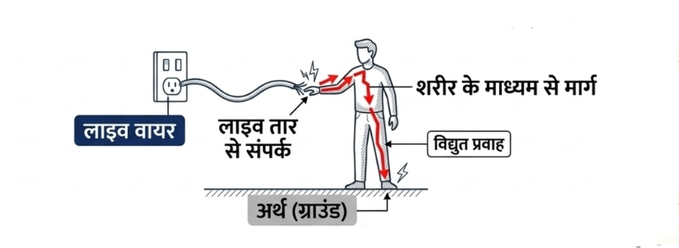
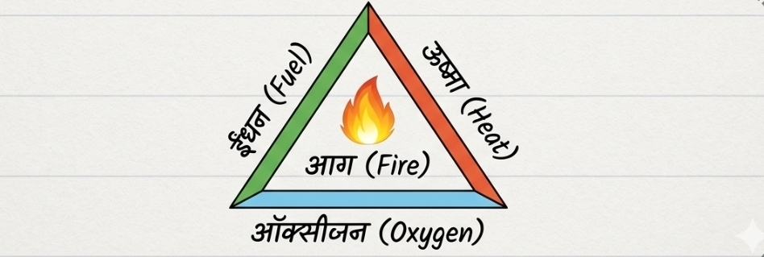
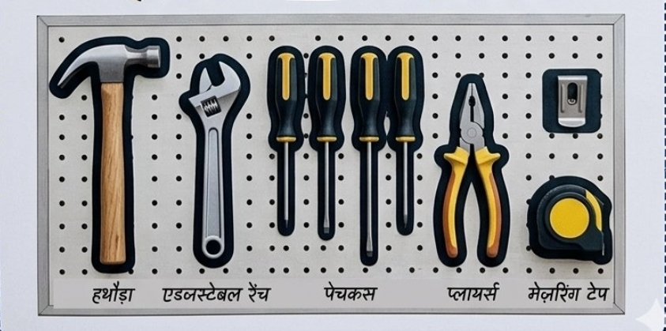
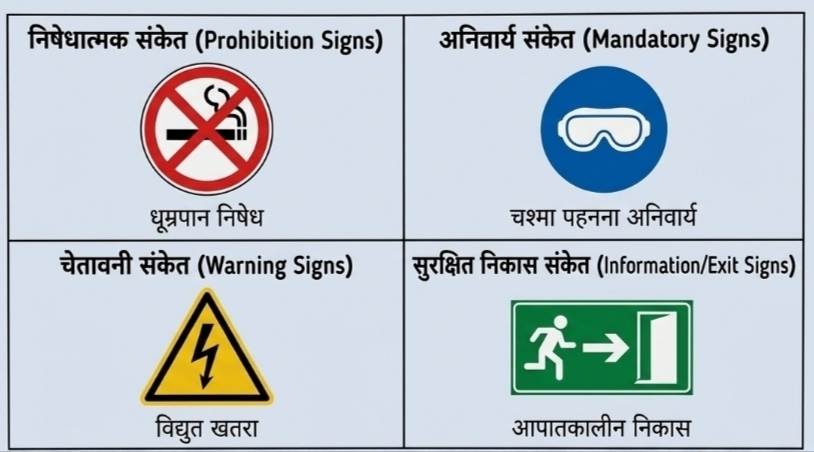
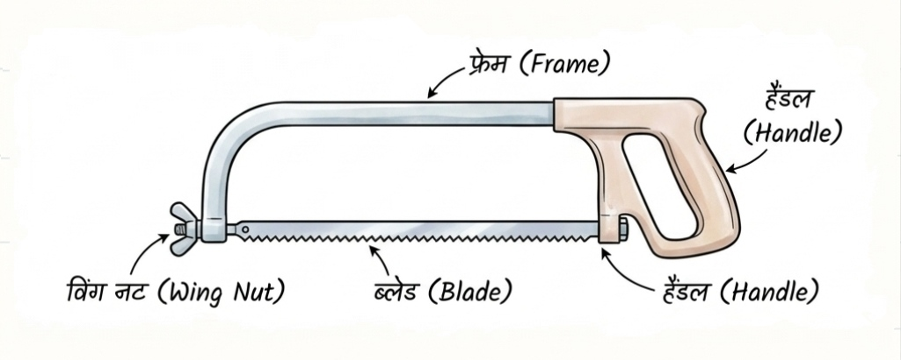
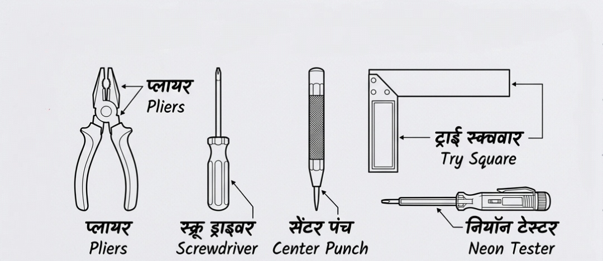

व्यावसायिक सुरक्षा एवं स्वास्थ्य
Occupational Safety & Health
RRB ALP CBT-2 • PART-B • ELECTRICIAN
CHAPTER 011. सुरक्षा का परिचय एवं दुर्घटना के कारण
Introduction & Causes of Accidents
औद्योगिक कार्यशाला में सुरक्षा केवल अपनी नहीं, बल्कि मशीनों, सहकर्मियों और संस्थान की भी होती है।
दुर्घटना के मुख्य कारण
- अज्ञानता (Ignorance): मशीन या टूल्स चलाने की सही जानकारी न होना।
- अत्यधिक उत्सुकता (Over-curiosity): बिना जानकारी के मशीन चालू करना।
- असावधानी (Carelessness): ध्यान भटकना या सुरक्षा नियमों को अनदेखा करना।
- असुरक्षित पहनावा (Unsafe Apparel): ढीले कपड़े, टाई, मफलर, अंगूठी या खुले बाल।
- गलत औजार (Incorrect Tools): गलत या खराब औजार का उपयोग।
- खराब हाउसकीपिंग (Poor Housekeeping): फर्श पर तेल, ग्रीस या धातु के टुकड़े बिखरे होना।
2. विद्युत झटका — कारण, प्रभाव एवं सुरक्षा
Electric Shock
जब विद्युत धारा मानव शरीर से होकर गुजरती है, तो विद्युत झटका लग सकता है। प्रभाव धारा, संपर्क की अवधि, शरीर के रास्ते और त्वचा की स्थिति पर निर्भर करता है।
करंट का शरीर पर प्रभाव
| धारा का मान | संभावित प्रभाव |
|---|---|
| लगभग 1 mA | झनझनाहट महसूस हो सकती है। |
| लगभग 5 mA | हल्का झटका महसूस हो सकता है। |
| 10–20 mA | मांसपेशियों में तेज संकुचन; व्यक्ति के लिए तार छोड़ना कठिन हो सकता है। |
| 50–100 mA | गंभीर श्वसन या हृदय संबंधी खतरा हो सकता है। |
| 100 mA से अधिक | गंभीर चोट, जलना या मृत्यु का जोखिम। |
ध्यान दें: ये अनुमानित उदाहरण हैं, सुरक्षित/असुरक्षित की निश्चित सीमा नहीं। कम धारा भी परिस्थितियों के अनुसार जानलेवा हो सकती है।
मानव शरीर का प्रतिरोध
- सूखी त्वचा: प्रतिरोध सामान्यतः अधिक होता है।
- गीली या पसीने वाली त्वचा: प्रतिरोध घट सकता है और करंट बढ़ सकता है।
- आंतरिक शरीर: त्वचा की तुलना में प्रतिरोध कम होता है।

विद्युत झटका लगने पर प्राथमिक कदम
- मुख्य स्विच या सप्लाई को सुरक्षित रूप से बंद करें।
- पीड़ित को सीधे न छुएँ; विद्युत खतरा समाप्त होने तक दूरी बनाएँ।
- आपातकालीन सहायता बुलाएँ।
- सुरक्षित होने पर सांस और प्रतिक्रिया जाँचें। सामान्य सांस न हो तो प्रशिक्षित व्यक्ति CPR/AED निर्देशों के अनुसार तुरंत सहायता शुरू करे।
3. कृत्रिम श्वसन एवं प्राथमिक उपचार
Artificial Respiration & First Aid
1. सिल्वेस्टर विधि (Sylvester's Method)
- यह कृत्रिम श्वसन की पारंपरिक विधियों में से एक है।
- पुरानी पुस्तकों में हाथों की गति से छाती का विस्तार कराने की प्रक्रिया बताई जाती है।
- आधुनिक आपातकाल में प्रशिक्षित CPR को प्राथमिकता दें।
2. शेफर विधि (Shafer's Method)
- यह भी कृत्रिम श्वसन की पुरानी विधि है।
- इसमें पारंपरिक रूप से पेट के बल स्थिति में पीठ के निचले भाग पर दबाव दिया जाता था।
3. मुँह से मुँह / मुँह से नाक
- रेस्क्यू ब्रीदिंग केवल उपयुक्त प्रशिक्षण और सुरक्षित परिस्थितियों में करें।
- यदि व्यक्ति सामान्य सांस नहीं ले रहा है, तो आपातकालीन सहायता बुलाएँ और CPR/AED के निर्देशों का पालन करें।
4. आग, वर्गीकरण एवं अग्निशामक
Fire & Fire Extinguishers
आग के लिए सामान्यतः तीन तत्व आवश्यक होते हैं। इन्हें Fire Triangle कहा जाता है।

🔥 Fuel
ईंधन — लकड़ी, पेट्रोल, गैस आदि।🌡️ Heat
ऊष्मा — आग शुरू करने के लिए आवश्यक गर्मी।💨 Oxygen
ऑक्सीजन — दहन को बनाए रखने में सहायता करती है।🧯 उद्देश्य
इनमें से किसी एक तत्व को हटाकर आग नियंत्रित करना।आग बुझाने की तीन विधियाँ
- Starving: ईंधन की आपूर्ति हटाना।
- Smothering: ऑक्सीजन की आपूर्ति रोकना।
- Cooling: तापमान कम करना।
आग की श्रेणियाँ — परीक्षा के लिए
| श्रेणी | आग का प्रकार | सामान्य जानकारी |
|---|---|---|
| Class A | लकड़ी, कागज, कपड़ा जैसे ठोस पदार्थ | उपयुक्त जल-आधारित या अन्य अनुमोदित यंत्र। |
| Class B | पेट्रोल, डीजल, पेंट जैसे ज्वलनशील तरल | फोम, CO₂ या उपयुक्त ड्राई पाउडर। |
| Class C | ज्वलनशील गैसें — वर्गीकरण मानक के अनुसार | गैस की आपूर्ति सुरक्षित रूप से बंद करना महत्वपूर्ण। |
| Class D | विशिष्ट ज्वलनशील धातुएँ | धातु के प्रकार के लिए अनुमोदित विशेष एजेंट। |
| Electrical | विद्युत उपकरण में लगी आग | पहले सप्लाई अलग करें, यदि सुरक्षित हो; उपयुक्त गैर-चालक एजेंट का प्रयोग करें। |
अग्निशामक के रंग — पारंपरिक पहचान
| प्रकार | पारंपरिक पहचान |
|---|---|
| Water | लाल |
| Foam | क्रीम रंग की पट्टी — कुछ पारंपरिक प्रणालियों में |
| DCP | नीली पट्टी — कुछ पारंपरिक प्रणालियों में |
| CO₂ | काली पट्टी — कुछ पारंपरिक प्रणालियों में |
वास्तविक उपयोग में सिलेंडर के रंग के बजाय लेबल, आग के प्रकार और निर्माता के निर्देश देखें।
5. 5S संकल्पना
Detailed 5S Concept
5S कार्यस्थल को व्यवस्थित, स्वच्छ और सुरक्षित रखने की एक प्रणाली है।
| क्रम | जापानी शब्द | अर्थ एवं कार्य |
|---|---|---|
| 1S | Seiri — Sort | अनावश्यक वस्तुओं को हटाना; Red Tag का उपयोग। |
| 2S | Seiton — Set in Order | औजारों को तय स्थान पर रखना; Shadow Board। |
| 3S | Seiso — Shine | मशीन और कार्यस्थल की सफाई। |
| 4S | Seiketsu — Standardize | चेकलिस्ट, नियम और रंग कोडिंग बनाना। |
| 5S | Shitsuke — Sustain | अनुशासन द्वारा व्यवस्था बनाए रखना। |

6. सुरक्षा संकेत — आकार और रंग
Safety Signs & Colour Codes
A. निषेधात्मक
आकार: वृत्ताकार
रंग: सफेद पृष्ठभूमि, लाल बॉर्डर/तिरछी पट्टी
उदाहरण: No Smoking
B. अनिवार्य
आकार: वृत्ताकार
रंग: नीली पृष्ठभूमि, सफेद चिन्ह
उदाहरण: हेलमेट पहनें
C. चेतावनी
आकार: त्रिकोणीय
रंग: पीली पृष्ठभूमि, काला चिन्ह
उदाहरण: विद्युत खतरा
D. सुरक्षित स्थिति / सूचना
आकार: वर्गाकार या आयताकार
रंग: हरा और सफेद
उदाहरण: Emergency Exit

7. व्यक्तिगत सुरक्षा उपकरण — PPE
Personal Protective Equipment
| PPE | उपकरण | सुरक्षा |
|---|---|---|
| 1 | हेलमेट | सिर |
| 2 | सेफ्टी शूज | पैर |
| 3 | रेस्पिरेटरी मास्क | धूल/हानिकारक कण |
| 4 | दस्ताने | हाथ और बाँह |
| 5 | गॉगल्स/फेस शील्ड | आँख और चेहरा |
| 6 | एप्रन/सुरक्षात्मक कपड़े | शरीर |
| 7 | ईयर प्लग/ईयर मफ | कान |
| 8 | फुल बॉडी हार्नेस | ऊँचाई पर गिरने से सुरक्षा |
8. अपशिष्ट निपटान
Waste Disposal Methods
| विधि | अर्थ | उदाहरण |
|---|---|---|
| Recycling | पुनर्चक्रण | तांबा, एल्युमिनियम, उपयुक्त प्लास्टिक |
| Composting | जैविक खाद बनाना | खाने का जैविक कचरा, पत्तियाँ |
| Incineration | नियंत्रित उच्च ताप पर जलाना | विशिष्ट अनुमोदित कचरा |
| Landfill | स्वीकृत स्थल पर भूमि भराव | अन्य गैर-पुनर्चक्रण योग्य कचरा |
9. सामान्य औजार — Hand Tools
Electrician Trade Tools
1. कॉम्बिनेशन प्लायर (Combination Pliers)
- कार्य: तार काटना, पकड़ना और मोड़ना।
- मुख्य भाग: Cutting Jaw, Flat Grip और Pipe Grip।
- सामान्य आकार: 150 mm और 200 mm।
- सावधानी: इसे हथौड़े की तरह न प्रयोग करें। विद्युत कार्य से पहले सप्लाई अलग करें; सामान्य प्लायर लाइव लाइन पर काम करने का विकल्प नहीं है।
2. स्क्रू ड्राइवर (Screwdriver)
- भाग: Blade/Shank, Tip और Handle।
- प्रकार: Flat Tip और Phillips/Cross Tip।
- सावधानी: स्क्रू ड्राइवर को छेनी की तरह न प्रयोग करें।
3. हथौड़े (Hammers)
| प्रकार | पहचान/कार्य |
|---|---|
| Ball Peen Hammer | एक सिरा सपाट, दूसरा गोल; धातु कार्य और रिवेटिंग। |
| Claw Hammer | लकड़ी से कील निकालने में उपयोग। |
| Mallet | लकड़ी/रबर/नायलॉन का सिर; सतह को कम नुकसान पहुँचाने वाले कार्य। |
4. पोकर / ब्रैडॉल (Poker / Bradawl)
लकड़ी के बोर्ड पर स्क्रू लगाने से पहले छोटा गाइड होल बनाने में उपयोग। सामान्य पाठ्यपुस्तक आकार लगभग 150 mm दिया जा सकता है।
5. इलेक्ट्रीशियन नाइफ (Electrician's Knife)
केबल का इंसुलेशन हटाने में उपयोग। कंडक्टर को काटने या खरोंचने से बचाएँ। विद्युत सप्लाई अलग करके ही कार्य करें।
6. हैक्सॉ (Hacksaw)
- भाग: Frame, Blade और Wing Nut।
- सामान्य लंबाई: 250 mm या 300 mm।
- Pitch: ब्लेड के दाँतों के बीच की दूरी/दाँतों की व्यवस्था से संबंधित माप।
- दाँत: सामान्य हैक्सॉ ब्लेड को इस प्रकार लगाया जाता है कि कटिंग स्ट्रोक आगे की ओर हो।

7. वायर स्ट्रिपर (Wire Stripper)
तार के कंडक्टर को नुकसान पहुँचाए बिना इंसुलेशन हटाने के लिए। कुछ प्रकारों में अलग-अलग वायर गेज के खाँचे होते हैं।
8. सेंटर पंच (Center Punch)
- धातु पर ड्रिलिंग से पहले केंद्र का निशान बनाने में उपयोग।
- पारंपरिक पाठ्यपुस्तक मानक: Center Punch का Point Angle लगभग 90°।
- Prick Punch का कोण पाठ्यपुस्तक के अनुसार 30° या 60° दिया जा सकता है।
9. स्टील रूल, ट्राई स्क्वायर और नियोन टेस्टर
| औजार | कार्य/मुख्य जानकारी |
|---|---|
| Steel Rule | लंबाई मापने के लिए; सामान्य आकार 150 mm या 300 mm। |
| Try Square | 90° कोण की जाँच करने के लिए। |
| Neon Tester | फेज़ की उपस्थिति जाँचने के लिए; दिए गए उपकरण की रेटिंग का पालन करें। |

औजारों की त्वरित समीक्षा
| औजार | याद रखने योग्य तथ्य |
|---|---|
| Combination Pliers | काटना, पकड़ना, मोड़ना; सामान्य आकार 150/200 mm। |
| Ball Peen Hammer | धातु कार्य; पाठ्यपुस्तक में 250 g सामान्य उदाहरण। |
| Mallet | लकड़ी/रबर/नायलॉन का सिर। |
| Center Punch | केंद्र का निशान; सामान्य पाठ्यपुस्तक मान 90°। |
| Try Square | 90° कोण की जाँच। |
| Neon Tester | फेज़ की उपस्थिति जाँचने के लिए; सही रेटिंग और सुरक्षित प्रक्रिया आवश्यक। |
⚡ अंतिम मिनट रिवीजन
- Accident — अनियोजित और अवांछित घटना।
- Electric Shock — सप्लाई अलग करना प्राथमिक कदम।
- Fire Triangle — Fuel + Heat + Oxygen।
- Starving — ईंधन हटाना।
- Smothering — ऑक्सीजन रोकना।
- Cooling — तापमान कम करना।
- 5S — Sort, Set in Order, Shine, Standardize, Sustain।
- Warning Sign — सामान्यतः पीला त्रिकोण।
- Mandatory Sign — सामान्यतः नीला वृत्त।
- Try Square — 90° कोण की जाँच।
- Center Punch — केंद्र का निशान।